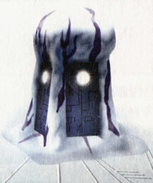

Juba's Corner: Information about the Guardian Fire
 |
{Juba:} As well as the surrounding walls, that protects us from monsters, the Guardian Fire, an Ancient Age relic found in the Holy District, also plays a great role in helping keep the monsters at bay. It protects the people of Zoah, by keeping the monsters away. It emits a strange light, that emanates across a wide distance. The monsters absolutely can't stand this holy light, and won't dare advance further near the Town. It's vital to our survival! The Power of the Ancients was truly incredible, don't you think? I figure that only the High Priest gets to see it. He's got his Guardian Fire, I've got my illuminating drinks. |
 The Guardian Fire, as shown above, is vital to the towns survival. Without it, the monsters would most definitely, breech the surrounding walls, and kill all of the people. How it emits such amazing light, is an Ancient Age mystery. |